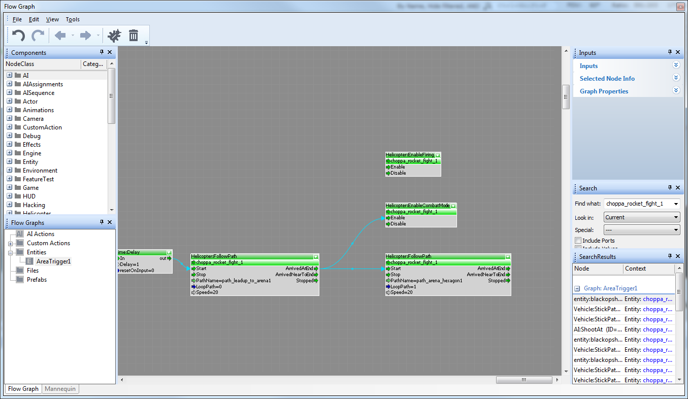

Изменения в Flight AI для Crysis 3
Теперь у нас есть несколько новых архетипов и узлов потока, которые можно использовать вместе с этими сущностями для управления летательными аппаратами.
В библиотеке архетипов персонажей вы можете найти:
- CELL/Helicopter.Regular
- Ceph/Dropship.Regular
- Цеф/Gunship.Regular
Их следует использовать в качестве замены старых архетипов из библиотеки архетипов c3_vehicles, чтобы получить изменения в навигации и поведении.
Новые потоковые узлы, которые следует использовать с этими объектами, можно найти в категории «Вертолет»:

FollowPath:
- Устанавливает текущий путь, который использует рейс AI.
- Когда AI не в боевом режиме.
- Если мы не позволим ему проходить путь в узле потока, AI попытается перейти от своего текущего местоположения к началу пути и следовать по нему, пока не достигнет конца пути.
- Если мы позволим ему пройти путь в узле потока, AI попытается перейти от своего текущего местоположения к ближайшей точке пути и продолжать следовать по нему. Выходные данные узла, указывающие, что он достиг конца пути, отправляются только один раз.
- Когда AI находится в боевом режиме.
- Когда цель видна.
- Путь используется для позиционирования AI в наилучшем месте для атаки цели. Он также используется для навигации между позициями, в которые он может попасть на пути.
- Когда цель не видна, путь используется как путь патрулирования. Поэтому это упрощает настройку, если пути в боевом режиме будут зацикливаться.
EnableCombatMode:
- Включает или отключает способность AI располагаться на боевом пути, чтобы атаковать и стрелять по текущей цели. По умолчанию AI нет в боевом режиме до тех пор, пока ему явно не будет разрешено перейти в боевой режим.
- Когда AI находится в боевом режиме и имеет представление о том, где находится цель (если он когда-либо ее видел), он попытается переместиться в пределах текущего пути туда, откуда он может по ней стрелять.
- Любой персонаж противостоящей фракции является хорошим кандидатом на роль цели.
EnableFiring:
- Включает или отключает способность AI стрелять по текущей цели в боевом режиме. По умолчанию AI разрешено стрелять в боевом режиме, если только этот узел не отключен явно.
Новое поведение AI реализовано с использованием новой модульной системы дерева поведения, и все они используют одну и ту же систему (HelicopterTree.xml).
Изменения в полетной навигации были внесены из-за ненадежности или отсутствия функционального поведения и необходимости сложной настройки. Тестовую карту для ряда случаев, которые не сработали, можно найти на тестовой карте под названием Suit_Disrupter.